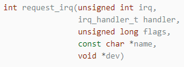
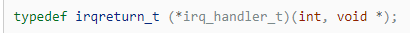
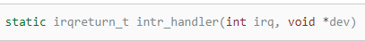
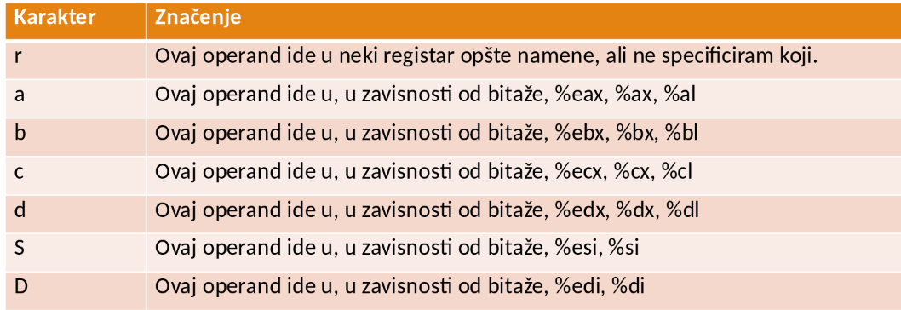
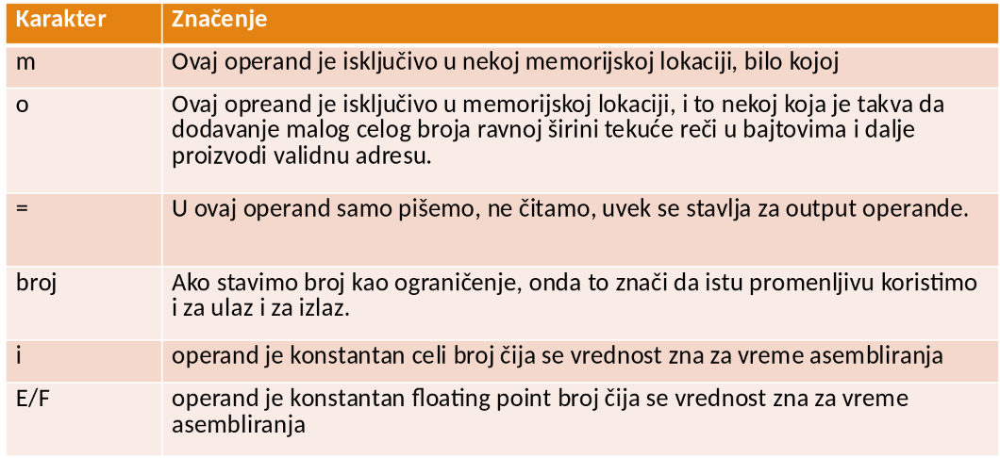
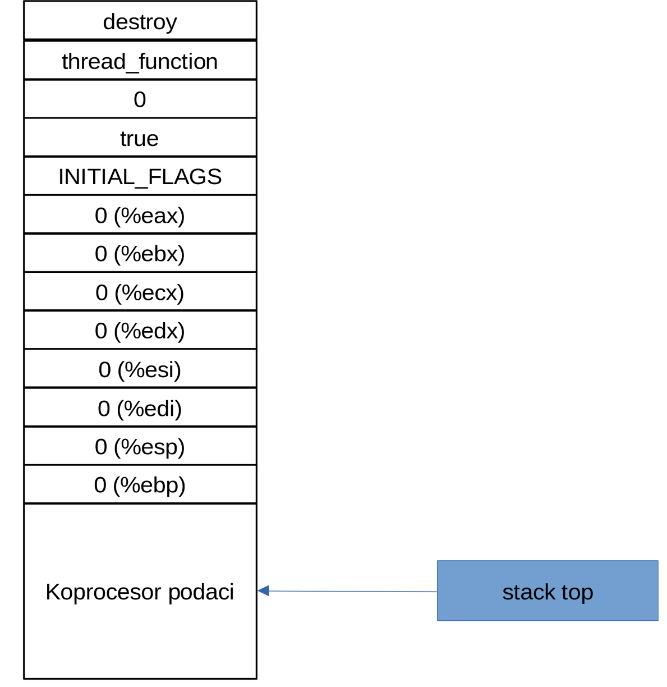
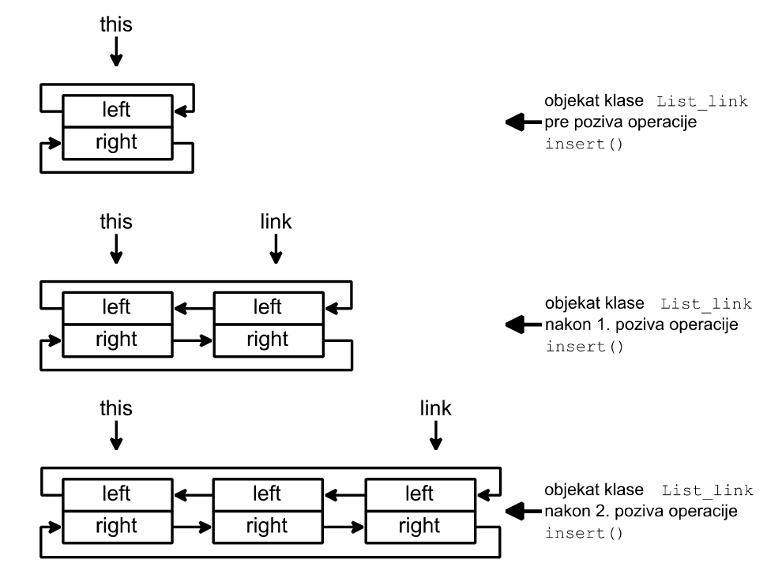

2026-03-01
xv6 kernela da vidimo modernizovanu verziju ovoga, kao i u kod Linux operativnog sistema, tamo gde to ima smisla.Atomic_region.get() klase Position obrazuje atomski region.set() poziva samo iz obrada prekida, njeno telo po definiciji obrazuje atomski region (jer su prekidi onemogućeni u toku obrade prekida, barem kod nas), pa je tako osigurana međusobna isključivost operacija klase Position.DriverDriver.static, da bi se mogla koristiti njena adresa.Driverstart_interrupt_handling() klase Driver omogućuje smeštanje adrese obrađivača prekida u tabelu prekida.xv6xv6// iz memlayout.h
#define UART0 0x10000000L
#define UART0_IRQ 10
#define VIRTIO0 0x10001000
#define VIRTIO0_IRQ 1
#define PLIC 0x0c000000L
#define PLIC_PRIORITY (PLIC + 0x0)
#define PLIC_PENDING (PLIC + 0x1000)
#define PLIC_SENABLE(hart) (PLIC + 0x2080 + (hart)*0x100)
#define PLIC_SPRIORITY(hart) (PLIC + 0x201000 + (hart)*0x2000)
#define PLIC_SCLAIM(hart) (PLIC + 0x201004 + (hart)*0x2000)


Event i DriverDriver ima kao povezanu klasu Eventsignal metoda
expect metoda
Timer_driver.hour, minute i second sadrže broj proteklih sati, minuta i sekundi.Timer_driver.TIMER (broj vektora prekida dodatnog sata), smesti adresu njene operacije interrupt_handler(), koja je zadužena za periodičnu izmenu sadržaja polja hour, minute i second, sa periodom od jedne sekunde.Timer_driver sadrži i operacije set() i get() za zadavanje i preuzimanje sadržaja njenih polja.Timer_driverTimer_driverTimer_driverTimer_driverTimer_driverSleep_driverDriver ilustruje i primer drajvera koji omogućuje uspavljivanje jedne niti dok ne protekne zadani broj otkucaja sata.Sleep_driver.simple_sleep_for() omogućuje jednoj niti da zaustavi svoju aktivnost dok se ne desi zadani broj otkucaja sata.interrupt_handler()) je da odbroji zadani broj otkucaja sata i da nakon toga signalizira da je moguć nastavak aktivnosti uspavane niti.Display_driver sadrži drajver ekrana koji upravlja kontrolerom ekrana.display_controller) sadrži registar stanja (display_controller.status_reg) i registar podataka (display_controller.data_reg).DISPLAY_READY.DISPLAY_BUSY.DISPLAY_READY (podrazumeva se da se ova vrednost nalazi u registru stanja na početku rada kontrolera ekrana).DISPLAY_BUSY, zaustavlja aktivnost niti.displayed_char klase Display_driver.character_put() i interrupt_handler() klase Display_driver.DISPLAY.Keyboard_driver sadrži drajver tastature koji upravlja kontrolerom tastature.keyboard_controller) sadrži registar podataka (keyboard_controller.data_reg).Keyboard_driver.count određuje popunjenost ovog bafera.first_full i first_empty klase Keyboard_driver.pressed klase Keyboard_driver.character_get() i interrrupt_handler() klase Keyboard_driver.KEYBOARD.Terminal_out omogućuje znakovni izlaz, odnosno prikaz znaknova na ekranu.%6d, %6u, %11d i %11u određuju broj cifara u decimalnom formatu u kome se prikazuju cifre celih označenih (d) i neoznačenih (u) brojeva, a oznaka %.3e određuje broj cifara iza decimalne tačke u decimalnom formatu u kome se prikazuju cifre razlomljenih brojeva.string_put() klase Terminal_out, koja se brine i o zaključavanju ekrana.Terminal_outTerminal_outTerminal_outTerminal_outstatic const char* UNSIGNED_SHORT_FORMAT = "%6u";
static const char* INT_FORMAT = "%11d";
static const char* UNSIGNED_FORMAT = "%11u";
static const char* DOUBLE_FORMAT = "% .3e";
static const int SHORT_SIGNIFICANT_FIGURES_COUNT = 5;
static const int INT_SIGNIFICANT_FIGURES_COUNT = 10;
static const int DOUBLE_SIGNIFICANT_FIGURES_COUNT = 10;Terminal_outTerminal_outTerminal_outTerminal_outTerminal_outTerminal_outTerminal_outTerminal_outTerminal_outTerminal_outTerminal_outTerminal_outstring_get(), kao i zaključavanje ekrana, radi eha znakova, preuzetih u ovoj operaciji.string_get() poziva operaciju edit() klase Terminal_in koja je zadužena za eho znakova na ekranu i njihovo primitivno editiranje.Terminal_in koriste operaciju string_get() za preuzimanje nizova znakova koji odgovaraju raznim tipovima podataka.Terminal_inTerminal_inTerminal_inTerminal_inTerminal_inTerminal_inTerminal_inTerminal_inTerminal_inTerminal_inTerminal_inTerminal_inTerminal_inTerminal_inTerminal_inTerminal_inxv6xv6 je napravljen da radi sa pločom koja na sebi ima UART kontroler.xv6#define Reg(reg) ((volatile unsigned char *)(UART0 + (reg)))
#define ReadReg(reg) (*(Reg(reg)))
#define WriteReg(reg, v) (*(Reg(reg)) = (v))
// videti http://byterunner.com/16550.html
#define RHR 0 // receive holding register (dolazeci bajtovi)
#define THR 0 // transmit holding register (odlazeci bajtovi)
#define IER 1 // interrupt enable register
#define IER_RX_ENABLE (1<<0)
#define IER_TX_ENABLE (1<<1)
#define FCR 2 // FIFO control register
#define FCR_FIFO_ENABLE (1<<0)
#define FCR_FIFO_CLEAR (3<<1) // clear the content of the two FIFOs
#define ISR 2 // interrupt status register
#define LCR 3 // line control register
#define LCR_EIGHT_BITS (3<<0)
#define LCR_BAUD_LATCH (1<<7) // mod da se namesti brzina prenosa
#define LSR 5 // line status register
#define LSR_RX_READY (1<<0) // Ima nesto da se preuzme u RHR
#define LSR_TX_IDLE (1<<5) // THR moze da prihvati novi karakterxv6void uartinit(void) {
WriteReg(IER, 0x00); // iskljuci prekide
WriteReg(LCR, LCR_BAUD_LATCH); // namesti mod za podesavanje brzine
WriteReg(0, 0x03); // LSB za 38.4K brzinu
WriteReg(1, 0x00); // MSB
WriteReg(LCR, LCR_EIGHT_BITS); // Prestani da podesavas brzinu, i namesti
// da se emituje u oktetima bitova, bez bitova parnosti
WriteReg(FCR, FCR_FIFO_ENABLE | FCR_FIFO_CLEAR);
WriteReg(IER, IER_TX_ENABLE | IER_RX_ENABLE);
initlock(&tx_lock, "uart");
}xv6// blokirajuce pisanje na UART koje se oslanja na prekide
void uartwrite(char buf[], int n){
acquire(&tx_lock);
int i = 0;
while(i < n){
while(tx_busy != 0){
// kondiciona sinhronizacija, cekamo da tx_busy vise nije 0
sleep(&tx_chan, &tx_lock);
}
WriteReg(THR, buf[i]);
i += 1;
tx_busy = 1;
}
release(&tx_lock);
}xv6// pisanje jednog karaktera na UART bez prekida
void uartputc_sync(int c) {
if(panicking == 0)
push_off(); // atomski region start
if(panicked){
for(;;)
;
}
// Čekamo da sam UARt kaže da ima mesta da šaljemo sledeći karakter
while((ReadReg(LSR) & LSR_TX_IDLE) == 0);
WriteReg(THR, c);
if(panicking == 0)
pop_off(); // atomski region stop
}xv6xv6void uartintr(void){
ReadReg(ISR); // citanjem registra zvanicno "primamo" prekid
acquire(&tx_lock);
if(ReadReg(LSR) & LSR_TX_IDLE){
// Sve je poslato, vreme je da .notify_one nit koja to ceka
tx_busy = 0;
wakeup(&tx_chan);
}
release(&tx_lock);
// Obradi sve karaktere koji cekaju, ako ih ima
while(1){
int c = uartgetc();
if(c == -1)
break;
consoleintr(c); // poslato konzoli da vidi sta ce sa ovim
}
}xv6// prekid konzole koji obradjuje karaktere C je makro koji vraca procenjen
// ASCII kod za kontrol plus neki karakter
void consoleintr(int c) {
acquire(&cons.lock);
switch(c){
case C('P'): // ctrl+p stampa listu procesa
procdump();
break;
case C('U'): // Brisanje linije
while(cons.e != cons.w &&
cons.buf[(cons.e-1) % INPUT_BUF_SIZE] != '\n'){
cons.e--;
consputc(BACKSPACE);
}
break;
case C('H'): // ctrl+H je kako ASCII razume "backspace"
case '\x7f': // Delete taster
if(cons.e != cons.w){
cons.e--;
consputc(BACKSPACE);
}
break;
default:
if(c != 0 && cons.e-cons.r < INPUT_BUF_SIZE){
c = (c == '\r') ? '\n' : c; // Prebacujemo UART novi red u Unix novi red
// eho na ekran
consputc(c);
cons.buf[cons.e++ % INPUT_BUF_SIZE] = c;
if(c == '\n' || c == C('D') || cons.e-cons.r == INPUT_BUF_SIZE){
// probudimo nit koja ceka da stigne cela linija ulaza
cons.w = cons.e;
wakeup(&cons.r);
}
}
break;
}
release(&cons.lock);
}Disk_driverDisk_driver sadrži drajver diska koji upravlja DMA kontrolerom diska.disk_controller) sadrži:
disk_controller.block_reg)disk_controller.buffer_reg)disk_controller.operation_reg)disk_controller.status_reg).Disk_driverDISK_READ ili DISK_WRITEDISK_STARTEDDisk_driverDisk_driver. Opisano ponašanje drajvera diska ostvaruju operacije block_transfer() i interrupt_handler() klase Disk_driver.DISK.Disk_driverDisk_driverDisk_driverDisk_driverDisk_driverDisk_driverDisk opisuje rukovanje virtuelnim (magneto-rotacionim) diskom.block_get() i block_put() koje omogućuju preuzimanje bloka sa diska i smeštanje bloka na disk.condition_variable (proširenje klase).wait().first(), next() i last() klase condition_variable.first() omogućuje pozicioniranje pre prvog deskriptora u listi uslova.next() omogućuje pozicioniranje pre narednog ili iza poslednjeg deskriptora u listi uslova.last() omogućuje pozicioniranje iza poslednjeg deskriptora u listi uslova.notify_one() klase condition_variable uvek izvezuje deskriptor sa početka liste uslova.optimize() klase Disk.FREE), poziv operacije optimize() dovodi do poziva blokirajuće operacije disk_driver.block_transfer().BUSY), a aktivnost pozivajuće niti je zaustavljena.optimize(), njihova aktivnost se zaustavlja, a njihovi deskriptori se uvezuju u jednu od dve liste uslova, koje odgovaraju polju q klase Disk.index ove klase indeksira ili listu uslova namenjenu za deskriptore niti koje čitaju blokove između trenutnog položaja glave diska i njegovog oboda ili listu uslova namenjenu za deskriptore niti koje čitaju blokove između centra rotacije ploče diska i trenutnog položaja njegove glave.boundary klase Disk.index može imati vrednost 0 ili 1.DiskDiskDiskDiskDiskDiskDiskDiskDiskDiskxv6xv6 je optimizovan za emuliran hardver.virtio.xv6len koji može da sadržinext popunimo indeksom sledećeg elementa u lancu, i tako što u polje flags stavimo bit koji indikuje da ima sledećeg elementa. Taj bit je na poziciji 1, simbolički predstavljenoj u xv6 kao VRING_DESC_F_NEXTflags koja nas zanima je VRING_DESC_F_WRITE koja ukazuje da očekujemo da će uređaj (disk) pisati u region memorije koji smo identifikovali poljem addr.available prsten), a drugi (used) lance desktriptora koji su obrađeni.// prsten za obradu
struct virtq_avail {
uint16 flags; // uvek nula
uint16 idx; // indeks sledeceg za obradu
uint16 ring[NUM]; // indeksi deskriptora koji pocinju lance
uint16 unused; // rezervisano za buducu upotrebu
};
// stavka u prstenu obradjenih
struct virtq_used_elem {
uint32 id; // indeks prvog desktriptora lanca koji je obradjen
uint32 len;
};
// prsten obradjenih
struct virtq_used {
uint16 flags; // uvek nula
uint16 idx; // sam uredjaj ovo povecava kada god ubaci obradjen
struct virtq_used_elem ring[NUM]; // kompletirani
};#define BSIZE 1024
struct buf {
int valid; // Da li su podaci stigli sa diska
int disk; // Da li je bafer pod kontrolom diska
uint dev; // indeks uredjaja
uint blockno; // indeks broja bloka na koji se odnosi
struct sleeplock lock; // mutex
uint refcnt; // polje za brojanje referenci
struct buf *prev; // infrastrukutra za sistem oslobadjanja i cuvanja
struct buf *next; // bafera
uchar data[BSIZE]; // sami podaci
};static int alloc_desc(){
for(int i = 0; i < NUM; i++){
if(disk.free[i]){
disk.free[i] = 0;
return i;
}
}
return -1;
}
static void free_desc(int i){
if(i >= NUM)
panic("free_desc 1");
if(disk.free[i])
panic("free_desc 2");
disk.desc[i].addr = 0;
disk.desc[i].len = 0;
disk.desc[i].flags = 0;
disk.desc[i].next = 0;
disk.free[i] = 1;
wakeup(&disk.free[0]);
}static void free_chain(int i){
while(1){
int flag = disk.desc[i].flags;
int nxt = disk.desc[i].next;
free_desc(i);
if(flag & VRING_DESC_F_NEXT) i = nxt;
else
break;
}
}
static int alloc3_desc(int *idx){
for(int i = 0; i < 3; i++){
idx[i] = alloc_desc();
if(idx[i] < 0){
for(int j = 0; j < i; j++)
free_desc(idx[j]);
return -1;
}
}
return 0;
}void virtio_disk_rw(struct buf *b, int write) {
uint64 sector = b->blockno * (BSIZE / 512);
acquire(&disk.vdisk_lock);
// Alociramo tri desktriptora
int idx[3];
while(1){
if(alloc3_desc(idx) == 0) {
break;
}
sleep(&disk.free[0], &disk.vdisk_lock);
}
struct virtio_blk_req *buf0 = &disk.ops[idx[0]];
if(write)
buf0->type = VIRTIO_BLK_T_OUT; // operacija pisanja na disk
else
buf0->type = VIRTIO_BLK_T_IN; // operacija ucitavanja sa diska
buf0->reserved = 0;
buf0->sector = sector;disk.opsdisk.ops je jednostavno koristan region memorije gde možemo da držimo operacije bez potrebe da ih alociramo i dealociramo.pool obrasca, koji je jako čest u operativnim sistemima. disk.desc[idx[0]].addr = (uint64) buf0;
disk.desc[idx[0]].len = sizeof(struct virtio_blk_req);
disk.desc[idx[0]].flags = VRING_DESC_F_NEXT;
disk.desc[idx[0]].next = idx[1];
disk.desc[idx[1]].addr = (uint64) b->data;
disk.desc[idx[1]].len = BSIZE;
if(write)
disk.desc[idx[1]].flags = 0; // uređaj čita iz b->data
else
disk.desc[idx[1]].flags = VRING_DESC_F_WRITE; // uređaj piše u b->data
disk.desc[idx[1]].flags |= VRING_DESC_F_NEXT;
disk.desc[idx[1]].next = idx[2];
disk.info[idx[0]].status = 0xff; // Napunimo status jedinicama, jer uređaj
// piše 0 ako uspe
disk.desc[idx[2]].addr = (uint64) &disk.info[idx[0]].status;
disk.desc[idx[2]].len = 1;
disk.desc[idx[2]].flags = VRING_DESC_F_WRITE; // uređaj piše status
disk.desc[idx[2]].next = 0; // kraj lanca // zabeležimo podatke tamo gde će obrađivač prekida moći da ih nađe
b->disk = 1;
disk.info[idx[0]].b = b;
// stavimo ovo u prsten na prvo slobodno mesto
disk.avail->ring[disk.avail->idx % NUM] = idx[0];
__sync_synchronize(); // ugrađena GCC funkcija koja emituje punu
// memorijsku barijeru
disk.avail->idx += 1; // pomerimo slobodno mesto
__sync_synchronize();
*R(VIRTIO_MMIO_QUEUE_NOTIFY) = 0; // Obavestimo red čekanja 0 na disku
// da ima nešto za obradu: R je makro koji računa adresu odgovarajućeg
// registra
// Čekamo prekid
while(b->disk == 1) {
sleep(b, &disk.vdisk_lock);
}
disk.info[idx[0]].b = 0;
free_chain(idx[0]);
release(&disk.vdisk_lock);
}void virtio_disk_intr() {
acquire(&disk.vdisk_lock);
// Markiramo prekid kao obrađen, bez toga, disk neće ništa
// više slati
*R(VIRTIO_MMIO_INTERRUPT_ACK) = *R(VIRTIO_MMIO_INTERRUPT_STATUS) & 0x3;
__sync_synchronize();
// disk.used->idx povećava sam uređaj kada nešto ubaci
// ovde to detektujemo
while(disk.used_idx != disk.used->idx){
__sync_synchronize();
int id = disk.used->ring[disk.used_idx % NUM].id;
if(disk.info[id].status != 0)
panic("virtio_disk_intr status");
struct buf *b = disk.info[id].b;
b->disk = 0; // buf više ne pripada disku
wakeup(b);
disk.used_idx += 1;
}
release(&disk.vdisk_lock);
}static struct disk {
// skup DMA desktriptora sa kojima sve vreme radimo: ovde se nalaze
struct virtq_desc *desc;
// prsten u kome čuvamo indekse početnih deskriptora lanaca koje
// treba obraditi
struct virtq_avail *avail;
// prsten u koji sam uređaj ostavi indekse početnih desktriptora lanca
// koje je obradio
struct virtq_used *used;
char free[NUM]; // Da li je neki deskriptor slobodan
uint16 used_idx; // Dokle smo obradili završene zahteve
// podaci o operacijama koje se trenutno dešavaju, za
// potrebe obrađivača prekida
struct {
struct buf *b;
char status;
} info[NUM];
// pool zaglavlja komandi
struct virtio_blk_req ops[NUM];
struct spinlock vdisk_lock;
} disk;void virtio_disk_init(void) {
uint32 status = 0;
initlock(&disk.vdisk_lock, "virtio_disk");
if(*R(VIRTIO_MMIO_MAGIC_VALUE) != 0x74726976 ||
*R(VIRTIO_MMIO_VERSION) != 2 ||
*R(VIRTIO_MMIO_DEVICE_ID) != 2 ||
*R(VIRTIO_MMIO_VENDOR_ID) != 0x554d4551){
panic("could not find virtio disk");
}
// reset uređaja sa statusom 0
*R(VIRTIO_MMIO_STATUS) = status;
// Spremni smo za konfiguraciju
status |= VIRTIO_CONFIG_S_ACKNOWLEDGE;
*R(VIRTIO_MMIO_STATUS) = status;
// Javljamo da smo drajver
status |= VIRTIO_CONFIG_S_DRIVER;
*R(VIRTIO_MMIO_STATUS) = status; // "dogovor" oko toga koje osobine disk podržava i koje želimo
uint64 features = *R(VIRTIO_MMIO_DEVICE_FEATURES);
features &= ~(1 << VIRTIO_BLK_F_RO); // ova sintaksa gasi bit
features &= ~(1 << VIRTIO_BLK_F_SCSI);
features &= ~(1 << VIRTIO_BLK_F_CONFIG_WCE);
features &= ~(1 << VIRTIO_BLK_F_MQ);
features &= ~(1 << VIRTIO_F_ANY_LAYOUT);
features &= ~(1 << VIRTIO_RING_F_EVENT_IDX);
features &= ~(1 << VIRTIO_RING_F_INDIRECT_DESC);
*R(VIRTIO_MMIO_DRIVER_FEATURES) = features;
// kažemo uređaju da smo OK sa dogovorenim osobinama
status |= VIRTIO_CONFIG_S_FEATURES_OK;
*R(VIRTIO_MMIO_STATUS) = status;
// učitamo status da proverimo da je i uređaj OK sa dogovorom
status = *R(VIRTIO_MMIO_STATUS);
if(!(status & VIRTIO_CONFIG_S_FEATURES_OK))
panic("virtio disk FEATURES_OK unset"); // Selektujemo red čekanja 0, samo to i koristimo
*R(VIRTIO_MMIO_QUEUE_SEL) = 0;
// Postaramo se da red čekanja nije nekako u upotrebi
if(*R(VIRTIO_MMIO_QUEUE_READY))
panic("virtio disk should not be ready");
// proverimo dužinu reda čekanja
uint32 max = *R(VIRTIO_MMIO_QUEUE_NUM_MAX);
if(max == 0)
panic("virtio disk has no queue 0");
if(max < NUM)
panic("virtio disk max queue too short");
// Alociramo memoriju; kalloc će vratiti čitavu jednu stranicu
// fizičke memorije, što znači da potencijalno ovde bacamo memoriju
disk.desc = kalloc();
disk.avail = kalloc();
disk.used = kalloc();
if(!disk.desc || !disk.avail || !disk.used)
panic("virtio disk kalloc"); // nuliramo cele stranice od PGSIZE što je 4096 bajta
memset(disk.desc, 0, PGSIZE);
memset(disk.avail, 0, PGSIZE);
memset(disk.used, 0, PGSIZE);
// podesimo željenu veličinu reda čekanja
*R(VIRTIO_MMIO_QUEUE_NUM) = NUM;
// napunimo odgovarajuće registre na uređaju sa fizičkim adresama
// naših struktura podataka
*R(VIRTIO_MMIO_QUEUE_DESC_LOW) = (uint64)disk.desc;
*R(VIRTIO_MMIO_QUEUE_DESC_HIGH) = (uint64)disk.desc >> 32;
*R(VIRTIO_MMIO_DRIVER_DESC_LOW) = (uint64)disk.avail;
*R(VIRTIO_MMIO_DRIVER_DESC_HIGH) = (uint64)disk.avail >> 32;
*R(VIRTIO_MMIO_DEVICE_DESC_LOW) = (uint64)disk.used;
*R(VIRTIO_MMIO_DEVICE_DESC_HIGH) = (uint64)disk.used >> 32;
// Proglasimo red čekanja spremnim
*R(VIRTIO_MMIO_QUEUE_READY) = 0x1;
for(int i = 0; i < NUM; i++)
disk.free[i] = 1;
// Signal uređaju da smo spremni za normalan rad
status |= VIRTIO_CONFIG_S_DRIVER_OK;
*R(VIRTIO_MMIO_STATUS) = status;
}FLOATING POINT EXCEPTION), a drugi je rezervisan za vektor obrađivača prekida sata.FLAGS registru, recimo, x86 procesora i kontroliše se sa sti i cli instrukcijama.interrupts_enabled i funkcija ad__disable_interrupt() i ad__restore_interrupts().interrupts_enabled sadrži (emulirani) bit prekida. Njena vrednost određuje da li su (emulirani) prekidi omogućeni (konstanta true) ili ne.ad__restore_interrupts() utvrdi da je došlo do odlaganja obrade (emuliranih) prekida (Interrupt::pending), ona pokreće prethodno odloženu emulaciju kontrolera pozivom operacije controller_emulator() klase Interrupt.xv6// uključimo prekide
static inline void intr_on() {
w_sstatus(r_sstatus() | SSTATUS_SIE);
}
// isključimo prekide
static inline void intr_off() {
w_sstatus(r_sstatus() & ~SSTATUS_SIE);
}
// proverimo status prekida
static inline int intr_get() {
uint64 x = r_sstatus();
return (x & SSTATUS_SIE) != 0;
}xv6Linux_signals opisuje reakciju na Linux signale.sigaction() da saopšti da njena operacija signal_handler() ima ulogu obrađivača signala SIGVTALRM i SIGFPE.SA_NODEFER (koju upisuje u polje sa.sa_flags) da saopšti da nema odlaganja obrada signala (da je obrađivač signala višeulazni).Linux_signals poništava akcije njenog konstruktora.Linux_signals::signal_handler() u slučaju signala SIGVTALRM pozove emulaciju prekida (Interrupt::emulation()), a u slučaju signala SIGFPE pozove obrađivača izuzetka (Interrupt::handler()) koji opslužuje hardverski izuzetak.Interrupt:
Keyboard_controller opisuje kontroler tastature.data_reg predstavlja registar podataka kontrolera, a njena operacija input() opisuje ponašanje kontrolera tastature.input() posredstvom odgovarajućeg Linux sistemskog poziva.handler():interrupt.handler(KEYBOARD)Interrupt koja emulira tabelu prekida.input() se periodično poziva u toku emulacije kontrolera.Display_controller opisuje kontroler ekrana.data_reg i status_reg predstavljaju registre podataka i stanja kontrolera, a njena operacija output() opisuje ponašanje kontrolera ekrana.output() posredstvom odgovarajućeg Linux sistemskog poziva.handler() interrupt.handler(DISPLAY) klase Interrupt koja emulira tabelu prekida.output() se periodično poziva u toku emulacije kontrolera.Linux_terminal koji koristi polje ots ove klase da sačuva zatečeni režim rada Linux terminala, a ts polje da zada njegov novi režim rada.Linux_terminal.Disk_controller opisuje ponašanje kontrolera diska.operation_reg, buffer_reg, block_reg i status_reg odgovaraju registrima smera prenosa, bafera, bloka i stanja kontrolera, a njena operacija transfer() opisuje ponašanje kontrolera diska.Disk_controller koristi sistemski poziv calloc() radi zauzimanja radne memorije, u kojoj se čuvaju blokovi emuliranog diska.transfer().handler() interrupt.handler(DISK) klase Interrupt koja emulira tabelu prekida.exit(). To omogućuje funkcija ad__report_and_finish()asm asm-qualifiers ( AssemblerInstructions )
asm-qualifiers može biti:
volatile — kaže kompajleru da ne optimizuje, podrazumevano za osnovni ASM kodinline — kaže kompajleru da minimizuje procenjenu veličinu ASM koda\n\tasm ("movl %eax, %ebx\n\t"
"movl $56, %esi\n\t"
"movl %ecx, $label(%edx,%ebx,$4)\n\t"
"movb %ah, (%ebx)");asm asm-qualifiers (
AssemblerTemplate
: OutputOperands
: InputOperands
: Clobbers
)asm asm-qualifiers (
AssemblerTemplate
:
: InputOperands
: Clobbers
: GotoLabels
)asm-qualifiersvolatile — isključuje stanovite optmizacije što je neophodno ako naš kod ima pobočne efekte, tj. ako radi nešto preko manipulacije ulaznih u izlazne vrednosti.inline — kao ranijegoto — informišemo kompajler da asm kod može skočiti na neku od labela koje smo specificirali u ‘GotoLabels’ parametru. Ako je to ikako moguće, ovo valja izbeći.%eax, recimo, moramo reći %%eax.%n gde n nekakav broj i asm će umesto te oznake umetnuti vrednost koju pod tim brojem prosleđujemo iz C koda kroz specifikacije koje se nalaze u OutputOperands i InputOperands"ograničenje" (izraz)

bsrbtsbtrad__get_index_of_most_signifcant_set_bit(), ad__set_bit() i ad__clear_bit() posreduju u korišćenju ovih asemblerskih naredbi.I387_npx omogućuje pripremu i preuzimanje inicijalnog sadržaja registara numeričkog koprocesora.I387_npx inicijalizuje registre numeričkog koprocesora i smešta njihov inicijalni sadržaj u polje initial_context ove klase pomoću asemblerskih naredbi fninit i fnsave.initial_context_get() klase I387_npx omogućuje preuzimanje inicijalnog sadržaja registara numeričkog koprocesora.destroy().ad__stack_init
ad__stack_init na stek smesti:
// definicija konteksta
struct context {
uint64 ra;
uint64 sp;
uint64 s0;
uint64 s1;
uint64 s2;
uint64 s3;
uint64 s4;
uint64 s5;
uint64 s6;
uint64 s7;
uint64 s8;
uint64 s9;
uint64 s10;
uint64 s11;
};
// u alokaciji procesa
memset(&p->context, 0, sizeof(p->context));
p->context.ra = (uint64)forkret;
p->context.sp = p->kstack + PGSIZE;struct trapframe {
uint64 kernel_satp; // tabela stranica jezgra
uint64 kernel_sp; // kernel stek procesa
uint64 kernel_trap; // adresa korisničkog dela obrađivača klopke
uint64 epc; // gde je program bio
uint64 kernel_hartid; // koji je procesor u pitanju
uint64 ra;
uint64 sp;
uint64 gp;
uint64 tp;
uint64 t0;
uint64 t1;
uint64 t2;
uint64 s0;
uint64 s1;
uint64 a0;
uint64 a1;
uint64 a2;
uint64 a3;
uint64 a4;
uint64 a5;| Modul | Elementi u kodu |
|---|---|
| sistemske niti | thread_wake_up_deamon() thread_destroyer_deamon() thread_zero() klasa Delta |
| modul za rukovanje procesima | klasa thread klasa Thread_image |
| modul za rukovanje datotekama | - |
| modul za rukovanje random memorijom | klasa Memory_fragment |
| Modul | Elementi u kodu |
|---|---|
| modul za rukovanje kontrolerima | klasa Timer_driver klasa Exception_driver klasa Driver |
| modul za rukovanje procesorom | klasa condition_variable klasa unique_lock klasa mutex klasa Kernel klasa Atomic_region klasa Ready_list klasa Descriptor klasa Permit klasa List_link klasa Failure |

typedef int Stack_item;
class Descriptor : private List_link { // nasledjuje se klasa List_link
// da bi bilo moguce deskriptore niti uvezivati u liste
protected:
Stack_item *stack_top; // pokazivac na vrh steka niti
int priority; // prioritet niti
Permit *last; // adresa poslednje dobijene propusniceenum procstate { UNUSED, USED, SLEEPING, RUNNABLE, RUNNING, ZOMBIE };
struct proc {
struct spinlock lock;
// p->lock neophodan za manipulaicju ovim:
enum procstate state; // Stanje procesa
void *chan; // Proces spava na ovom kanalu ako nenula
int killed; // Ako nije nula, proces je terminisan
int xstate; // Status izlaza
int pid; // Identifikator procesa
// wait_lock neophodan za manipulaciju ovim
struct proc *parent; // Proces-roditelj
// Sinhronizacija nije neophodna
uint64 kstack; // Kernel-nivo stek procesa
uint64 sz; // Zauzeta memorija procesa
pagetable_t pagetable; // Tabela stranica za proces
struct trapframe *trapframe; // Stranica za 'trampolinu'
struct context context; // Sačuvan kontekst za pokretanje
struct file *ofile[NOFILE]; // Otvoreni fajlovi
struct inode *cwd; // Radni direktorijum
char name[16]; // Ime (samo za debagovanje)
}; };
inline void make_ready(Descriptor *const d);
inline void expect(List_link *const waiting_list);
inline void signal(List_link *const waiting_list);
inline void exclusive_in(Permit *const permit);
inline void wait(const unsigned t, List_link *const waiting_list);
inline void notify_one(List_link *const waiting_list);void scheduler(void) {
struct proc *p;
struct cpu *c = mycpu();
c->proc = 0;
for(;;){
// izbegava deadlock ako je zadnji proces imao iskljucene prekide
intr_on();
intr_off();
int found = 0;
for(p = proc; p < &proc[NPROC]; p++) {
acquire(&p->lock);
if(p->state == RUNNABLE) {
p->state = RUNNING;
c->proc = p;
swtch(&c->context, &p->context);
c->proc = 0;
found = 1;
}
release(&p->lock);
}
if(found == 0) {
// nemamo šta da radimo, zamrznemo jezgro do sledećeg prekida
asm volatile("wfi");
}
}
}// Nit ovo poziva da bi se vratila u nit-raspoređivač
void sched(void) {
int intena;
struct proc *p = myproc();
if(!holding(&p->lock))
panic("sched p->lock");
if(mycpu()->noff != 1)
panic("sched locks");
if(p->state == RUNNING)
panic("sched RUNNING");
if(intr_get())
panic("sched interruptible");
intena = mycpu()->intena; // prethodno stanje prekida
swtch(&p->context, &mycpu()->context);
mycpu()->intena = intena;
}yield u ime tog procesa, što garantuje ‘round robin’ raspored.